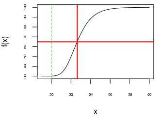
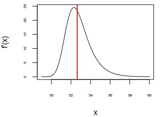
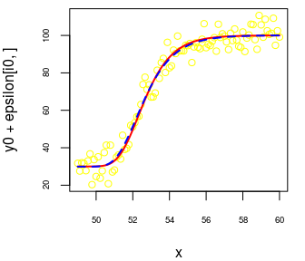

Five-parameters logistic regression
The five-parameters logistic curve is commonly defined by \[ f(x) = A + \frac{D-A}{\Bigl(1+\exp\bigl(B(C-x)\bigr)\Bigr)^S}. \] Assuming \(B>0\) and \(S>0\),
\(A\) is the value of the horizontal asymptote when \(x \to -\infty\);
\(D\) is the value of the horizontal asymptote when \(x \to +\infty\);
\(B\) describes how rapidly the curve makes its transition between the two asymptotes;
\(C\) is a location parameter, which does not have a nice interpretation (except if \(S=1\));
\(S\) describes the asymmetry of the curve (the curve is symmetric when \(S=1\)).
In the case when \(S=1\), the parameter \(C\) is the value of \(x\) for which the corresponding value \(f(x)\) is the midpoint between the two asymptotes; moreover, the curve has an inflection point at \(x = C\).
In the general case, the value of \(x\) for which the corresponding value \(f(x)\) is the midpoint between the two asymptotes is \[ x_{\text{mid}} = C - \frac{\log\Bigl(2^{\frac{1}{S}}-1\Bigr)}{B}. \] It is obtained by solving \(\Bigl(1+\exp\bigl(B(C-x)\bigr)\Bigr)^S = 2\).
n <- 100
x <- seq(49, 60, length.out = n)
A <- 30; D <- 100; B <- 1; C <- 50; S <- 10
f <- function(x) A + (D-A) / (1 + exp(B*(C-x)))^S
y0 <- f(x)
par(mar = c(4, 4, 0.5, 1))
plot(x, y0, type = "l", cex.axis = 0.5, ylab = "f(x)")
abline(v = C, col = "green", lty = "dashed")
( xmid <- C - log(2^(1/S) - 1)/B )
## [1] 52.63424
Note that the inflection point of the curve is not the point correspoding to \(x_{\text{mid}}\):
library(numDeriv)
df <- grad(f, x)
par(mar = c(4, 4, 0.5, 1))
plot(x, df, type = "l", cex.axis = 0.5, ylab="f'(x)")
abline(v = xmid, col = "red", lwd = 2) 
In practice, we are often interested in estimating \(x_{\text{mid}}\). So it is better to use this other parameterization of the five-parameters logistic curve: \[ g(x) = A + \frac{D-A}{{\biggl(1+\exp\Bigl(\log\bigl(2^{\frac{1}{S}}-1\bigr) + B(x_{\text{mid}}-x)\Bigr)\biggr)}^S} \] because fitting this curve will directly give the estimate of \(x_{\text{mid}}\) and its standard error.
Another advantage of this parameterization is that there is a way to get a good starting value of \(x_{\text{mid}}\) when one wants to fit the five-parameters logistic regression model:
getInitial1 <- function(x, y){
s <- getInitial(y ~ SSfpl(x, A, D, xmid, inverseB),
data = data.frame(x = x, y = y))
c(A = s[["A"]],
B = 1/s[["inverseB"]],
xmid = s[["xmid"]],
D = s[["D"]],
S = 1)
}I don’t know how to get a good starting value for \(S\), so I always take \(1\).
Sometimes, SSfpl can fail. Here is another function which returns some starting values:
getInitial2 <- function(x, y){
NAs <- union(which(is.na(x)), which(is.na(y)))
if(length(NAs)){
x <- x[-NAs]
y <- y[-NAs]
}
low_init <- min(y)
high_init <- max(y)
minmax <- c(which(y == low_init), which(y == high_init))
X <- cbind(1, x[-minmax])
Y <- log((high_init-y[-minmax])/(y[-minmax]-low_init))
fit <- lm.fit(x = X, y = Y)
b_init <- fit$coefficients[[2]]
xmid_init <- -fit$coefficients[[1]] / b_init
if(b_init < 0){
b_init <- -b_init
A <- low_init
D <- high_init
}else{
A <- high_init
D <- low_init
}
c(A = A, B = b_init, xmid = xmid_init, D = D, S = 1)
}Now we wrap these two functions into a single one:
getInitial5PL <- function(x, y){
tryCatch({
getInitial1(x, y)
}, error = function(e){
getInitial2(x, y)
})
}And finally we can write a function for the fitting:
library(minpack.lm)
fit5pl <- function(x, y){
startingValues <- getInitial5PL(x, y)
fit <- tryCatch({
nlsLM(
y ~ A + (D-A)/(1 + exp(log(2^(1/S)-1) + B*(xmid-x)))^S,
data = data.frame(x = x, y = y),
start = startingValues,
lower = c(-Inf, 0, -Inf, -Inf, 0),
control = nls.lm.control(maxiter = 1024, maxfev=10000))
}, error = function(e){
paste0("Failure of model fitting: ", e$message)
})
if(class(fit) == "nls" && fit[["convInfo"]][["isConv"]]){
fit
}else if(class(fit) == "nls" && !fit[["convInfo"]][["isConv"]]){
"Convergence not achieved"
}else{ # in this case, 'fit' is the error message
fit
}
}Let’s try it on a couple of simulated samples:
set.seed(666)
nsims <- 25
epsilon <- matrix(rnorm(nsims*n, 0, 5), nrow = nsims, ncol = n)
estimates <- matrix(NA_real_, nrow = nsims, ncol = 5)
colnames(estimates) <- c("A", "B", "xmid", "D", "S")
for(i in 1:nsims){
fit <- fit5pl(x, y0 + epsilon[i,])
if(class(fit) == "nls"){
estimates[i, ] <- coef(fit)
}else{
estimates[i, ] <- c(NaN, NaN, NaN, NaN, NaN)
}
}
summary(estimates)## A B xmid D
## Min. :24.19 Min. :0.8918 Min. :52.52 Min. : 98.63
## 1st Qu.:27.99 1st Qu.:0.9566 1st Qu.:52.58 1st Qu.: 99.71
## Median :29.54 Median :1.0121 Median :52.64 Median :100.31
## Mean :29.22 Mean :1.0367 Mean :52.63 Mean :100.22
## 3rd Qu.:30.18 3rd Qu.:1.1207 3rd Qu.:52.67 3rd Qu.:100.64
## Max. :32.23 Max. :1.2599 Max. :52.76 Max. :101.80
## S
## Min. : 1.001
## 1st Qu.: 2.262
## Median : 36.444
## Mean :1357.639
## 3rd Qu.:2003.601
## Max. :7261.694The estimate of \(x_{\text{mid}}\) is excellent. As you can see, the estimate of \(S\) is sometimes much larger than the true value. Let’s have a look at the worst case:
i0 <- match(max(estimates[, "S"]), estimates[, "S"])
estimates[i0, ]
## A B xmid D S
## 29.9159582 0.8917679 52.5992848 100.0519760 7261.6944532# sample
par(mar = c(4, 4, 0.5, 1))
plot(x, y0 + epsilon[i0, ], col = "yellow", cex.axis = 0.6)
# true curve
curve(A + (D-A)/(1 + exp(log(2^(1/S)-1) + B*(xmid-x)))^S,
add = TRUE, col = "red", lwd = 2)
# fitted curve
with(as.list(estimates[i0, ]),
curve(A + (D-A)/(1 + exp(log(2^(1/S)-1) + B*(xmid-x)))^S,
add = TRUE, col = "blue", lwd = 2, lty = "dashed")
)
Thus, while the estimate of \(S\) is very far from the true value of \(S\), the fitted curve correctly estimates the true curve. And in such cases, the standard error of the estimate of \(S\) is big:
##
## Formula: y ~ A + (D - A)/(1 + exp(log(2^(1/S) - 1) + B * (xmid - x)))^S
##
## Parameters:
## Estimate Std. Error t value Pr(>|t|)
## A 2.992e+01 1.334e+00 22.424 <2e-16 ***
## B 8.918e-01 7.058e-02 12.635 <2e-16 ***
## xmid 5.260e+01 7.310e-02 719.542 <2e-16 ***
## D 1.001e+02 9.347e-01 107.038 <2e-16 ***
## S 7.262e+03 1.757e+06 0.004 0.997
## ---
## Signif. codes: 0 '***' 0.001 '**' 0.01 '*' 0.05 '.' 0.1 ' ' 1
##
## Residual standard error: 5.224 on 95 degrees of freedom
##
## Number of iterations to convergence: 27
## Achieved convergence tolerance: 1.49e-08Note that nlsLM provides a test of the nullity of \(S\). This is not interesting, whereas the equality \(S = 1\) is of interest. So it is better to parametrize the logistic function with \(L = \log(S)\) instead of \(S\): \[
h(x) =
A + \frac{D-A}{{\biggl(1+\exp\Bigl(\log\bigl(2^{\exp(-L)}-1\bigr) + B(x_{\text{mid}}-x)\Bigr)\biggr)}^{\exp(L)}}.
\] In this way we can get a test of \(L = 0\), that is \(S = 1\).